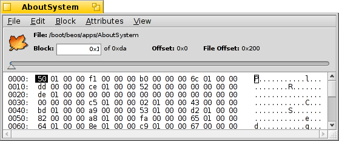

磁盘扫描器
磁盘扫描器
| 桌面栏: | ||
| 位置: | /boot/system/apps/DiskProbe | |
| 设置: | ~/config/settings/DiskProbe_data |
磁盘扫描器是一个十六进制的编辑器，用于在字节级上查看和修改文件或者硬件设备上的数据。它是一个低级的工具，当然如果不仔细操作的话，可能会造成错误。
该工具主要用于处理文件的备份，但是在直接用于处理硬件设备时需要倍加谨慎小心。
在启动磁盘扫描器时，您需要给出所要处理的文件或者硬件。 之后，软件将会呈现以下界面：

主视图总是展示一个数据块，而数据块的大小可以通过 予以调整。在数据块的左端是数据块起始处的偏移量，而中部则是十六进制的数据，右端是数据的ASCII字符形式。
你可以通过使用主视图上部的滑动条或者组合键 ALT ← 和 ALT → 来查看数据块，使用 TAB 键来在不同的十六进制和ASCII数据列之间转换。
不仅显示了存储方式的选择（以十六进制或者十进制的方式，这可以通过 来进行设置）,它也指明了你所跳转到的当前数据块的偏移量。如果您所查看的数据行超出了文件或者硬件的范围，它将会明显的灰暗化。
在查看文件系统时，这将会是一个非常好用的特性，因为在文件系统中包含了许多指向其他数据块的指针。
如果您所查看的文件包含相关的属性，那么 菜单可以打开一个新的磁盘扫描器窗口。下面就是 关于系统 程序的 SYS:PACKAGE 属性：

依据属性的类别，除了总是呈现的 Raw Editor，它还会呈现出其他不同的编辑器。例如，字符和 MIME 类型的编辑器或者用于矢量图标属性的图标查看器